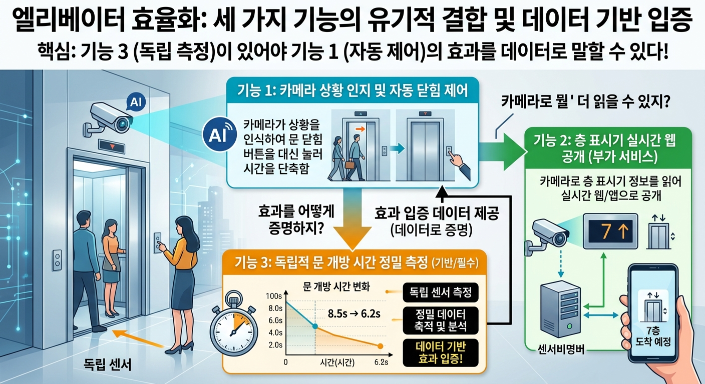
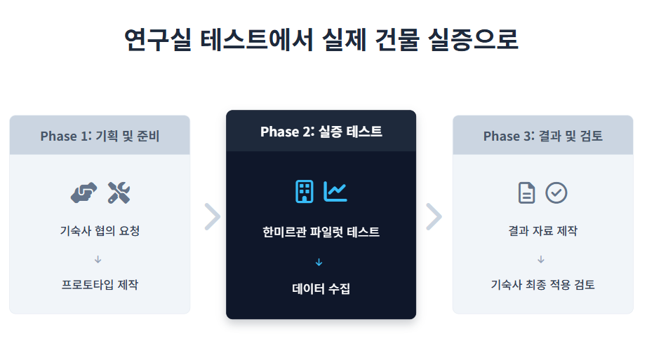
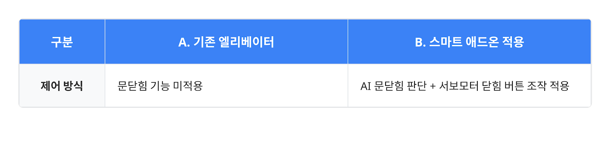
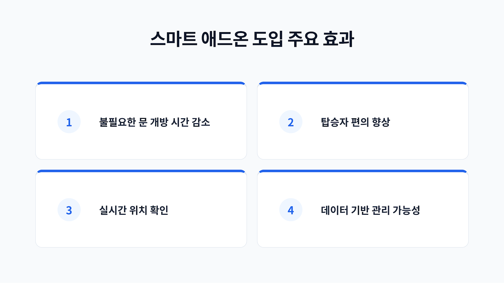

문제 정의
🏫 현장 문제 발견
⏱️ 불필요한 시간 낭비
위층에서 1층으로 내려가는 중, 중간층에서 사람이 내린 뒤에도 엘리베이터 문이 약 13초 이상 불필요하게 열려 있음
📦 불편한 사용 환경
더 탈 사람이 없음에도 문이 오랫동안 열려 있어 탑승자가 매번 직접 닫힘 버튼을 눌러야 함
🚧 현실적 제약
기존 엘리베이터 제어반을 직접 개조하거나 시스템을 수정하는 것은 불가능
❓ 핵심 질문
기존 엘리베이터를 바꾸지 않고, 상황에 맞게 닫힘 버튼을 보조할 수 없을까?
📹 문제 상황 영상
※ script.js에서 VIDEO_URL에 영상 경로를 입력하세요
영상이 준비 중입니다
VIDEO_URL을 설정하면 영상이 표시됩니다
프로젝트 개요
🎯 문제에서 기능으로 확장
하나의 문제 정의에서 출발해 시스템 제어, 정보 제공, 효과 검증을 담당하는 3가지 유기적 기능으로 확장
🔗 시스템 구조
기능 1 (자동 제어)
카메라 상황 인식 ➔ 닫힘 버튼 대신 누름
기능 2 (정보 제공)
7세그먼트 층수 인식 ➔ 웹 서비스 공개
기능 3 (효과 검증)
문 개방 시간 측정 ➔ 데이터 검증

하드웨어 구성
ESP32 카메라 (2대)
승강장 상황 판단용 1대
층수 표시기 인식용 1대
서보모터 (1개)
기존 닫힘 버튼 물리 조작용
초음파센서 (1개)
독립적인 문 상태 및
개방시간 측정용
ESP32-S3 Sense
메인 제어 보드
📋 기능별 역할
| 구분 | 주요 역할 | 핵심 기술 |
|---|---|---|
| 기능 1 | AI 상황 판단 + 버튼 보조 | AI 비전 인식, ESP-NOW 무선 통신, 서보모터 제어 |
| 기능 2 | 층수 인식 + 실시간 웹 서비스 | 템플릿 매칭, Supabase, GitHub Pages |
| 기능 3 | 문 개방시간 및 정차 데이터 측정 | 초음파 센싱, CSV/웹 데이터 로깅, BEFORE/AFTER 비교 |
기능 1 - 닫힘 버튼 자동 누름
AI 상황 판단 + 버튼 보조
🔄 동작 프로세스
카메라 촬영 ➔ AI 상황 판단 ➔ 닫힘 여부 결정 ➔ ESP-NOW 전송 ➔ 서보모터 동작 ➔ 닫힘 버튼 압박
🔧 현장 무선 조정 시스템 (AP 모드)
접속 방식: 장치가 생성한 Wi-Fi AP에 스마트폰 접속 (192.168.4.1)
- 카메라 구도 확인, AI 판정 결과 실시간 검증
- 서보 각도 조정, 오답 데이터 저장/다운로드
⚠️ 카메라 각도 오작동 해결
학습 데이터 촬영 각도와 실제 설치 각도의 차이로 AI 판단이 흔들리는 문제 발생
- 다양한 설치 각도 데이터 추가 수집
- AP 화면에 반투명 가이드 라인 제공
- 임계값·연속 프레임 검증·쿨다운 타임 적용으로 오작동 방지
✨ 특징
- 기존 엘리베이터 제어기를 건드리지 않음
- 사람이 직접 누르던 닫힘 버튼을 장치가 보조
- 외부에 탑승하려는 사람이 있으면 누르지 않음
- 판단이 불확실하면 누르지 않음
기능 2 - 실시간 층수 확인
🔄 동작 프로세스
7세그먼트 층 표시기 ➔ ESP32 카메라 ➔ Template Matching ➔ 이동 규칙 필터링 ➔ Supabase ➔ 웹 표출
🌐 공개 웹 주소
https://joony167.github.io/elevator-floor/
🔧 기압센서 한계 극복
기압 난류로 인해 불안정한 초기 방식 포기, 층수 표시기 직접 읽는 시각 인식 방식으로 전환
📷 설치 환경 고려 (템플릿 매칭)
정면 촬영은 이용자의 화면을 가리므로 표시기 상단에 카메라를 비스듬히 설치
🎯 유사 형태(6/8층) 오인식 필터링
이전 층수 상태값과 엘리베이터 이동 규칙 결합으로 비정상 튀는 값 자동 필터링
예시: 5 → 6 → [8 무시] → 7
🔧 현장 무선 조정 시스템 (AP 모드)
층수 표시기 ROI 설정, 층별 템플릿 등록, 인식 기준값 및 일치도 현장 보정
웹사이트 기능
🌐 실시간 웹사이트
※ 친구가 만든 웹사이트 URL을 아래 스크립트에 입력하면 자동으로 표시됩니다
웹사이트가 준비 중입니다
나중에 URL을 입력하면 실제 웹사이트가 표시됩니다
🖥️ 메인 페이지 (index.html)
- 실시간 층수 표시
- 엘리베이터 방향 (▲ 상행, ▼ 하행, ■ 정지)
- 시간대별 이용량 차트
- 총 이용량 통계
- 2초 주기 실시간 업데이트
🔧 디버깅 페이지 (debug.html)
- 실시간 카메라 이미지 표시
- 숫자 인식 결과 및 신뢰도
- 7-segment 세그먼트 시각화
- 인식 로그 및 통계
- 업데이트 주기 조절 (100ms ~ 5000ms)
기능 3 - 데이터 기반 문 개방시간 측정
문 개방시간 및 정차 데이터 측정
🔄 동작 프로세스
초음파 거리 측정 ➔ OPEN/CLOSED 판단 ➔ 정차 기록 생성 ➔ CSV/웹 데이터 저장
🎯 목적
실제 제품의 효율성 및 유용성 확보, 데이터 기반 검증
⚙️ 기능
- 1회 정차당 문 개방시간
- 하루 정차 횟수
- 평균 문 개방시간
- 누적 문 개방시간
📦 센서 수급 지연 대응
ToF 센서 배송 지연으로 기존 보유한 초음파 센서로 대체, AP 모드 캘리브레이션으로 측정 구조 완비
🔧 현장 무선 조정 시스템 (AP 모드)
- 초음파 거리 측정값 확인
- 문 상태(OPEN/CLOSED) 캘리브레이션
- 최근 정차 기록 검토
실험 경과

현장 실증 및 대시보드
한미르관
📍 현장 적용 추진 단계
📊 A/B 테스트 검증 체계
| 구분 | 조건 | 측정 항목 |
|---|---|---|
| A (기존) | 애드온 미적용 상태 | 하루 동안 정차당 문 개방시간 및 누적 시간 |
| B (적용) | AI 문닫힘 보조 및 서보모터 동작 | 하루 동안 개방시간 |
※ 실제 수치는 한미르관 실증 데이터 수집 완료 후 업데이트 예정
📡 LIVE 통합 대시보드
- 층수 인식: 현재 층, 필터링 처리된 층수, Supabase 연결 상태 및 업데이트 시간
- AI 상황 판단: 현재 클래스, 신뢰도(Confidence), 버튼 동작 여부 및 미동작 사유
- 서보 & 문 상태: ESP-NOW 통신 상태, 서보 동작 상태, 초음파 측정 거리 및 OPEN/CLOSED 상태
- 실시간 모니터링: 한미르관 현장 스마트폰 생중계 화면 연동

결론
📝 요약
- ESP32-S3 Sense 기반 엘리베이터 자동화 시스템 구현
- 3가지 핵심 기능 구현: 닫힘 버튼 자동 누름, 층수 디텍팅, 초음파 센서
- 웹사이트를 통해 실시간 모니터링 가능
🚀 다음 단계
- 실제 엘리베이터 설치 및 튜닝
- 더 많은 데이터 수집을 통한 개선
- 확장 가능성 탐색
라이브 시연
🌐 우리가 만든 웹페이지
실시간 엘리베이터 모니터링
웹페이지 준비 중
URL을 설정하면 웹페이지가 표시됩니다
인터랙션
📱 스마트폰 중계 화면
실시간 영상 중계
스마트폰 영상 준비 중
URL을 설정하면 영상이 중계됩니다
⚙️ 시연 설정
※ script.js에서 WEBPAGE_URL과 PHONE_URL을 설정하세요
추후 계획
🏫 기숙사 협의 미팅 진행 완료

기대효과
⏱️ 불필요한 문 개방시간 감소
중간층 하차 후 탑승자 부재 시 대기 시간을 최소화하여 운행 효율 증대
👥 사용자 편의성 향상
매번 닫힘 버튼을 수동으로 누르는 번거로움 해소
| 항목 | 기존 | 구현 후 |
|---|---|---|
| 닫힘 버튼 | 직접 누름 | 자동 누름 |
| 층수 확인 | 엘리베이터 타서 확인 | 웹사이트에서 실시간 확인 |
🌐 실시간 위치 정보 제공
웹을 통해 엘리베이터의 현재 위치를 미리 확인 가능
- 실시간 엘리베이터 위치 확인 가능
- 이용량 통계 데이터 제공
- 시간대별 이용 패턴 파악
📊 데이터 기반 승강기 관리
정차 횟수 및 문 개방시간 데이터 누적으로 이용 패턴 분석 및 관리 고도화
- 총 닫힌 횟수로 시스템 성과 검증
- 데이터 기반 개선 가능
